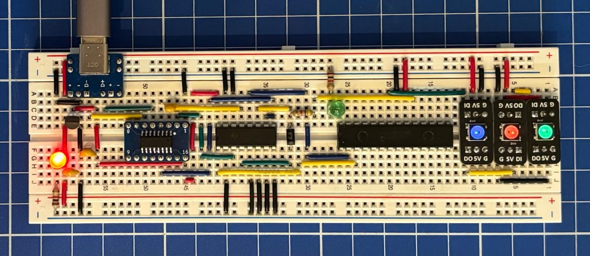
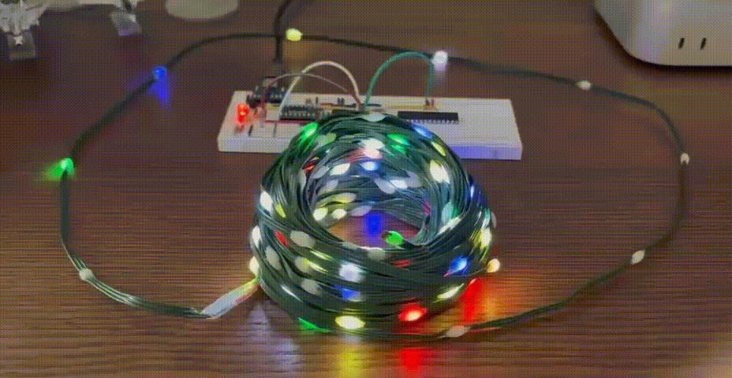

WS2812

Los LED’s RGB de tipo WS2811, WS2812B, WS2814, y WS2815 entre muchos otros que hay como el SK6812, son los denominados LED inteligentes o LED addressable. Básicamente, tienen un controlador integrado fabricado por Worldsemi. Estos funciona con 5V y un máximo de 60mA a su máximo brillo (20mA por LED y 3 colores), y tiene un protocolo comunicación propietario NRZ (Non-Return-to-Zero) para ir por un solo cable y sentido.
Note
Este código ha sido probado solo con WS2812B. Según el datasheet y el protocolo NRZ hace entender que puede funcionar en el resto de versiones, pero no he podido confirmarlo.
Para el proyecto usé este módulo WeAct WS2812 que se puede conseguir en AliExpress a buen precio y calidad. También puedes usar una tira de 20 mts con 200 LED’s WS2811B.
Hice una serie de pruebas sobre la tira de 200 LED’s que tiene el WS2811B para conocer su consumo real, además de lo que indica el datasheet. Se alimenta con 5v y funciona perfecto, con menos no funciona del todo bien, toda la tira con los LED’s apagados, pero conectados al VCC consume 120mA. Luego empecé a entender solo uno e ir jugando con los colores, básicamente cada color primario que hace uso de un solo LED interno que consume 10mA, con dos colores primarios al máximo para generar el color amarillo son 20mA y los tres colores primarios al máximo para generar el color blanco gasta 30mA.
El siguiente código se comunica con tres LED’s en serie por el pin PA0. Una nota curiosa, estos LED’s no son del orden RGB, sino GRB.
|
|
X-mas
Si queremos hacer un efecto simple de las luces de navidad:

|
|
Compilar y subirlo
Para compilarlo deberá ejecutar el siguiente comando:
|
|
Para subir el programa al microcontrolador, deberá ejecutar el siguiente comando:
|
|
Si todo fue bien, podrá disfrutar de los colores.